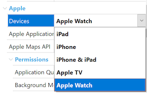
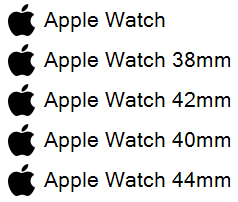

Apple Watch is one of the new members of the Apple family that can run GeneXus applications. For Apple TV development, take a look at Getting Started with watchOS and tvOS. Apple Watch applications have a few considerations to take into account. Each watchOS application is a component of an iPhone application, that is, each watchOS app needs to be distributed and installed with an iPhone application. User interaction with watchOS applications is different than with iOS applications. Apple Watch was designed for quick interactions that make the most of the display and its position on the user’s wrist. Information is quick and easy to access and dismiss. The best apps support fast interactions and focus on the content that users care about the most. Designing a great app requires a focused approach. Interactions with Apple Watch are measured in seconds, so your app must quickly provide the user with essential information. Interactions occur over short periods of time, so apps must convey the most important information up front and communicate that information clearly and without distraction. This document contains information on how to accomplish these requirements with GeneXus. The watchOS App Main ObjectFirst of all, you need to create a new main object for the watchOS application. Apple Watch applications navigation model can be page-based or hierarchical. Hierarchical navigation is well suited for master-detail interfaces or for presenting a navigable list of options. It can also make it easier to extend your app and add new content later. When users tap an item in a hierarchy, a new screen appears that displays details about that item. Page-based navigation is an alternate way to present a flat collection of information in which all items are peers. In page-based navigation, each item is displayed on a single page that scrolls vertically. Users swipe horizontally to navigate from page to page, and dots indicate their place in the set of pages. Because navigating through a large number of pages can be time-consuming, limit the number of pages you include in your interface. For page-based navigation, the main object must be a Menu object, for hierarchical navigation it should be a Panel object or a Menu object with the control property other than Tabs (see Several ways to show a Menu). Set the Main property to True. Set the Devices property to the value "Apple Watch":  After you set this property to "Apple Watch", you will note a few properties were hidden. That's because those properties will be inherited from the iPhone app's main object. To define which iPhone application is the container of the Watch's app, you need to set the property "Watch Main" of the iPhone app main object, selecting the main object you just created for the watch application. Content and DesignRemember, Watch interactions occur over short periods of time, just a few seconds, so apps must convey only the most important information up front. Focus on essential content. Your watchOS app should complement your iPhone app, not mimic it. Even though there are four display sizes:
Show the same content, regardless of display size. Use relative sizing and Dynamic Type to ensure that items expand or contract naturally to fill the available space. Note that 40mm and 42mm screen sizes are almost the same, so it's a good strategy to start designing for those screens and then make small adjustments for the smaller 38mm and larger 44mm displays. To select the Theme to be used, you could use the predefined Platforms node in the KB Explorer:  The recommended approach is to assign a theme to the predefined "Apple Watch" platform, which applies to all display sizes, and then make variations only if needed. A few tips for designing your layouts
ResponsivenessResponsiveness is critical for Apple Watch applications. Interactions with Apple Watch are measured in seconds, so data should be available as soon as possible. Both online and offline architectures are supported. A good strategy to minimize data loading times is to preload data on a single request, and then pass part of that data as parameters. As an example, imagine an application with a hierarchical structure. Main object "A" has detail data (like a caption) and repetitive data in a grid, which calls a detail panel "B" for each item of the grid on "A". The simple way is to have a Refresh (or Start) event, for the detail data, and a Load event for the grid data on "A". Also panel "B" would receive the data's primary key by parameter and have a Refresh (or Start) event to load the detail data. Even though this works fine, performance is not optimal, and the experience would not be good on Apple Watch. A better solution is to use an SDT which can hold all the data. The grid on "A" would be based on a collection member of the SDT and should contain all the data that panel "B" needs, passed by parameter. This would reduce the required data request from three or more requests (two for panel "A" and one for each item shown in panel "B"), to just one single request. There is a trade-off between simplicity and performance, but for watchOS applications (online mostly), it's recommended for achieving a great user experience. Application IconApplication icon image should be assigned to the Application Icon property of the watchOS app main object. Design icons as square images, Apple Watch automatically applies a circular mask. Remember you can provide a single image (1024px x 1024px), and GeneXus generates automatically images with a smaller size. If you want to provide images for each specific size, you could do so, see Icon Sizes. Embrace simplicity. Find a single element that captures the essence of your app and express that element in a simple, unique shape. Add details cautiously. If an icon’s content or shape is overly complex, the details can be hard to discern, especially at smaller sizes. Take advantage of the icon’s circular shape as part of your design. Maintain some similarity between your watchOS and iOS app icons. Using a similar appearance and color palette creates an association between the two icons. The two icons don’t need to be identical, but they should be recognizable together. Do not use black for your icon's background. Lighten a black background or add a border so that the icon doesn’t blend into the display background. Avoid text in your icons. Text in icons is often too small, so avoid it when you can. However, using a mnemonic—such as the first letter of your app’s name, for example—as a key design element in your icon can speed recognition of your app. Other ImagesOptimizing your app’s images improves performance. Remember watch displays are small, design your image files to be as small as needed, mostly for images which are not bundled with the app (data) and should be downloaded to the device. Produce artwork in the appropriate format. Use de-interlaced PNG files for bitmap/raster artwork. PNG supports transparency and, because it's lossless, compression artifacts don't blur important details or alter colors. It's a good choice for intricate artwork that requires effects like shading, textures, and highlights. Use JPEG for photos. Its compression algorithm usually produces smaller sizes than lossless formats and artifacts are harder to discern in photos. Photo-realistic app icons, however, look best as PNGs. Optimize JPEG files to find a balance between size and quality. You can compress most JPEG files without noticeable degradation of the image. Even a small amount of compression can save significant disk space. Experiment with compression settings on each image to find the optimal value that yields an acceptable result. Avoid transparency. Images with transparency include an alpha channel, which increases the file size. If you always composite an image on the same, solid background color, it’s more efficient to include the background in the image. Building and ExecutionBuilding and prototyping your watchOS application is almost the same as doing that for iOS Applications, however, there are a few differences:
For more detailed information about Apple Watch development, see Apple's Human Interface Guidelines for watchOS. |
| Backlinks | |
| Getting Started with tvOS | Getting Started with watchOS and tvOS |